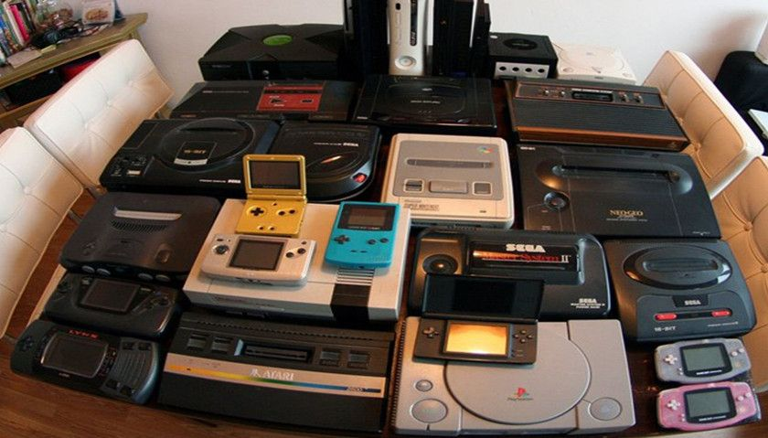

La leyenda cuenta que a fines de los años 70’, Tohru Iwatani, diseñador de Namco,
empresa japonesa de software en el campo de los videojuegos, salió una noche a comer
pizza en compañía de algunos amigos. Luego de coger el primer trozo y mirar la forma
que quedaba (un círculo al que le faltaba una parte, por lo que parecía tener una boca)
tuvo un súbito momento de inspiración para crear un nuevo juego. Había nacido el famoso
Pac man, el videojuego más famoso de todos los tiempos.
Luego de un año y medio de trabajo, Iwatani, junto a su grupo de colaboradores, terminaron
de desarrollar el juego. El protagonista, Pac-Man, un círculo amarillo al que le faltaba un
sector, por lo que parecía tener una boca, aparecía en un laberinto donde debía comer puntos
pequeños, mayores y otros premios en forma de frutas y otros objetos. El propósito del Pac-Man
era comerse todos los puntos de la pantalla para pasar al siguiente nivel o pantalla (el juego
original tiene 255 niveles). Sin embargo, el Pac-Man debía sortear la presencia de cuatro peligrosos
fantasmas de colores que no sólo se movían más rápido que el jugador sino que también intentaban
atraparlo. Cuatro puntos más grandes de lo normal, ubicados en las esquinas del laberinto,
le proporcionaban en todo caso a Pac Man la posibilidad de comerse a los fantasmas, que se tornaban
azules mientras Pac-Man disfrutaba de esa habilidad. No obstante, los fantasmas, una vez devorados,
podían regenerarse en una especie de corral ubicado al medio del laberinto, lo que volvía cada vez
más frenético el juego.
El personaje de Mario surgió del primer juego de Donkey Kong, creación de Shigeru Miyamoto de 1981, que
estaba inspirado en el triángulo amoroso de las tiras cómicas y dibujos animados de Popeye, el marino.
En este caso la princesa Vilma, equivalante al personaje de Oliva, era raptada Donkey Kong (Brutus) y
debía ser salvada por “Jump Man”, el héroe. En el juego el personaje tenía que evitar barriles, martillos
gigantes y otros obstáculos para llegar a la cima de una estructura en donde esperaba la damisela en peligro.
Luego de su inicial aparición, Miyamoto quiso Jump Man fuera un personaje de referencia para su próximo
videojuego y lo rebautizó como Mario para introducirlo al mercado norteamericano. Adicionalmente, introdujo
a Luigi, el hermano de Mario, para poder brindarle a los usuarios la experiencia de multi-jugador.
Ahí nace Mario Bros (1982) creado para las Arcade de Nintendo. En esta ocasión, los dos personajes debían
enfrentarse a un mundo subterráneo rodeado de tuberías, de las cuales salían tortugas y otras criaturas que
atentaban contra Mario y Luigi. Si el juego de a dos se tornaba aburrido daba la opción de enfrentarse uno a
uno a como diera lugar.
El juego tuvo un modesto éxito, con el lanzamiento de la Nintendo Entertainment System, llegaría Super Mario
Bros (1985). Grandes cambios traería Mario: los hermanos salen de las cañerías para enfrentarse a Bowser, la
tortuga gigante que se apoderó del “Reino Hongo” y que raptó a la princesa Peach. Los jugadores debían atravesar
8 mundos distintos, cada uno de los cuales ofrecía 5 niveles.
Super Mario Bros marcó un punto de giro para la industria de videojuegos de plataforma y los juegos de 8 Bits,
con una narrativa única, con niveles plagado de secretos y un gran arte del juego. En aquel momento las personas
compraban Nintendo solo para poder jugar con Mario.